An LLM is trained to do one thing, over and over: given the tokens seen so far, predict a probability distribution over the entire vocabulary for what comes next.
Take a real sentence, e.g. "the cat sat". At the position after "the cat", the model outputs a probability for every word in the vocabulary — "sat", "ran", "dog", all of them. Training nudges the weights so this distribution puts more probability on the word that actually comes next in the real sentence — repeated at every position, of every sentence, in the whole training set.
The question this whole deck is really about: what if, instead of "the word that actually comes next," the target the model is pushed toward is a teacher model's opinion of what should come next?
The "ground truth" at each position is a one-hot vector $y$ — probability $1$ on the actual next token, $0$ on every other word in the vocabulary. The loss is cross-entropy between the model's predicted distribution and this one-hot target:
$V$ — the vocabulary; $y_v=1$ for the true next token, $0$ otherwise, so every term except the true token's vanishes; $q_\theta(y_t|y_{<t},x)$ — the probability the model actually assigned to the real next token. Minimizing this is exactly maximum-likelihood training: push the probability of the real data as high as possible.
Vocabulary $\{\text{the, cat, sat, dog, ran}\}$; context "the cat ___", true next word "sat". Suppose the model's predicted distribution is $q_\theta=[0.05,\,0.10,\,0.60,\,0.05,\,0.20]$:
| word | the | cat | sat (true) | dog | ran |
|---|---|---|---|---|---|
| $y$ (one-hot) | 0 | 0 | 1 | 0 | 0 |
| $q_\theta$ | 0.05 | 0.10 | 0.60 | 0.05 | 0.20 |
| $-y\log q_\theta$ | 0 | 0 | 0.5108 | 0 | 0 |
$\mathcal{L}=-\log(0.60)=0.5108$ — only the true token's probability mattered; the model's other $0.40$ of probability mass (spread over "cat", "dog", "ran") never enters the loss at all, no matter how it's distributed among the wrong answers.
Replace the one-hot target with the teacher's own predicted distribution — same cross-entropy formula, different target:
$p(v|\ldots)$ — the teacher's probability for word $v$, now used as the target instead of a one-hot vector. Often softened with a temperature $T$ first: $q_i=\dfrac{\exp(z_i/T)}{\sum_j\exp(z_j/T)}$, $z$ the model's raw logits — $T=1$ is ordinary softmax; $T>1$ spreads probability mass out, revealing the teacher's relative confidence across the wrong answers too — "dark knowledge" a one-hot label can never carry.
Same context, same student $q_\theta$. Now the teacher's own distribution is the target — say the teacher also rates "ran" fairly plausible ("the cat ran" makes sense too):
| word | the | cat | sat | dog | ran |
|---|---|---|---|---|---|
| $p$ (teacher) | 0.02 | 0.05 | 0.70 | 0.03 | 0.20 |
| $q_\theta$ (student) | 0.05 | 0.10 | 0.60 | 0.05 | 0.20 |
| $-p\log q_\theta$ | 0.0599 | 0.1151 | 0.3576 | 0.0899 | 0.3219 |
$\mathcal{L}_{\text{KD}}=0.9444$ — every word contributes now, including "ran" ($0.20$ of the teacher's belief lands there). The student is pushed toward the teacher's whole shape, not just the one correct answer from before.
Split the cross-entropy into two pieces, using an identity true for any two distributions — not something special to KD:
$H(\text{teacher})$ — the teacher's own Shannon entropy, how spread-out $p$ itself is, computed with no student involved at all. Cross-entropy measures the average "surprise" of an outcome drawn from $p$, scored using $q_\theta$'s probabilities — even a perfect student ($q_\theta=p$) leaves $H(\text{teacher})$ of irreducible surprise behind, since $p$ itself isn't a certainty.
Student $\ne$ teacher: $H=0.9048$, $\text{KL}=0.0396$, sum $=0.9444=\mathcal{L}_{\text{KD}}$. Student set to match the teacher exactly: $\text{KL}=0$, so $\mathcal{L}_{\text{KD}}=H(\text{teacher})=0.9048$ — not $0$. Since $H(\text{teacher})$ never involves $\theta$, it contributes zero gradient — minimizing the KD loss and minimizing forward KLD are the same optimization problem, they just report different numbers. This was all at one token — the next slide zooms out to a whole response.
Zooming out from one token to the whole task: knowledge distillation (KD) trains a small student model using supervision from a large, already-trained teacher model, instead of (or in addition to) raw labeled data — the point is to shrink the compute needed at inference time.
Only the teacher's generated text is available (e.g. an API like ChatGPT). The student trains on teacher outputs directly.
The teacher's full output distribution is available — exactly the setting from the previous slides. The student can match probabilities, not just copy text.
This paper studies white-box KD for open-source LLMs — small models trained to match a large model's actual output distribution.
Given a prompt $x$, the teacher's output distribution $p(y|x)$ over responses $y$, and a student $q_\theta(y|x)$, standard KD approximately minimizes the forward Kullback-Leibler divergence:
$x$ — a prompt, sampled from the prompt distribution $p_x$; $y$ — a full response; $p(y|x)$ — the teacher's probability of response $y$; $q_\theta(y|x)$ — the student's probability of the same response, parameterized by weights $\theta$. This is the same objective as ordinary maximum-likelihood training, just against the teacher's distribution instead of ground-truth labels.
$p(y|x)$ is a probability over an entire response — but the teacher only ever hands you per-token distributions, the same ones from every earlier slide. The bridge is the chain rule: the probability of a whole sequence is the product of each token's conditional probability, given everything before it:
Extend the running example by one token, "the cat sat down":
| step | context → true token | $p$ | $q_\theta$ | $\log(p/q_\theta)$ |
|---|---|---|---|---|
| 1 | "the cat" → "sat" | 0.70 | 0.60 | 0.1542 |
| 2 | "the cat sat" → "down" | 0.70 | 0.50 | 0.3365 |
$p(y|x)=0.70\times0.70=0.49$, $q_\theta(y|x)=0.60\times0.50=0.30$, $\log(0.49/0.30)=0.4906$ — exactly $0.1542+0.3365$. The sequence-level ratio in the forward-KLD formula is a sum of per-token log-ratios — no new quantity to compute, just the per-token terms already familiar, added up along the response.
Forward KLD wants two things at once: $y$ sampled from the teacher's own generation, and the student matching the teacher's full distribution at every step. Neither practical method gets both — they trade off in opposite directions:
| context $y_{<t}$ comes from | per-token target | |
|---|---|---|
| Word-level KD | real, ground-truth data | teacher's full soft distribution (exact) |
| SeqKD | the teacher itself (exact) | one-hot on the teacher's own sampled token |
Word-level KD keeps the soft, per-token target exact, but evaluates it on real sequences instead of teacher-generated ones — the paper's "approximately," since real data only matches teacher-generated contexts once the teacher is strong. SeqKD keeps the sampling source exact — a real teacher-generated sequence — but then discards the teacher's actual probabilities and trains on that one sample as ordinary one-hot ground truth, losing the dark knowledge every other slide has been carrying.
Nothing rules this out mathematically — sample $y$ from the teacher, then match the teacher's full distribution at every step of that same $y$. That is exactly the un-approximated forward-KLD objective from three slides ago. Each practical method drops it for its own documented reason:
The true sequence-level target sums over every possible response, weighted by how likely the teacher is to produce it: $-\sum_{y\in\mathcal Y}p(y|x)\log q_\theta(y|x)$ — exponentially many terms. Kim & Rush's original SeqKD approximates $p(y|x)$ by a single point, the teacher's most likely response $\hat y$ (found via beam search). Collapsing the teacher's distribution down to one response is exactly what removes the soft target — the loss becomes plain $-\log q_\theta(\hat y|x)$, with nothing soft left to keep.
Scoring the teacher's per-token distribution on an already-written sequence takes one parallel forward pass. Generating a new response from the teacher instead takes $T$ sequential decoding steps per example, repeated across the whole training set — so word-level KD keeps using the real dataset it already has.
Later work (Agarwal et al., 2024) shows this combination — a generated sequence plus the teacher's per-token soft distribution along it — is a real option, but works better when the sequence comes from the student, not the teacher: that is what the student needs to get right at inference time, the same reason MiniLLM samples $y$ from $q_\theta$ on the next slide.
Forward KLD forces $q_\theta$ to place probability everywhere $p$ does — if $p(y|x)>0$ but $q_\theta(y|x)\to0$ anywhere, $\log(p/q_\theta)\to\infty$ and the loss explodes. For a small number of classes (text classification), this is harmless: both distributions have few modes anyway.
An LLM's response space is enormous and multi-modal — many different phrasings are all individually plausible. A small student lacks the capacity to represent every mode $p$ does, so forced coverage makes it spread probability onto void regions of $p$ — places the teacher finds implausible — producing low-quality, hallucinated generations at free-run time.
Context "the cat ___", a 4-token vocabulary. The teacher genuinely likes two different continuations — "sat" and "ran" — and almost never says "purred" or "flew":
| token | sat | purred | flew | ran |
|---|---|---|---|---|
| teacher $p$ | 0.49 | 0.01 | 0.01 | 0.49 |
Suppose the student is capacity-limited to a single "bump" of confidence across these four tokens — it can commit to one coherent continuation shape, not two unrelated ones at once. Fitting that one bump by forward vs. reverse KLD gives very different students:
$q=[0.03,\ \mathbf{0.47},\ \mathbf{0.47},\ 0.03]$ — the bump lands between the two real modes, the only place a single bump gets partial credit for both. 94% of the student's probability lands on "purred"/"flew".
$q=[\mathbf{0.80},\ 0.20,\ 0.00,\ 0.00]$ — the bump commits to one real mode, "sat", and stays close to it. Only 20% spills onto the neighboring void token, none onto the far one.
Same teacher, same student family — minimizing forward KLD produces a student that mostly says implausible things; minimizing reverse KLD produces one that says a real thing, just not always the same real thing.
MiniLLM instead minimizes the reverse KLD — the same two distributions, with the direction flipped:
Same $p$, $q_\theta$, $x$ as before — but now $y$ is sampled from the student's own distribution $q_\theta$, not the teacher's. This one change — whose distribution $y$ comes from — is what turns the training signal from "cover everything the teacher might say" into "get good at what you already tend to say."
KL divergence is not symmetric — $\text{KL}[p\|q]\ne\text{KL}[q\|p]$ in general. Take $p=[0.70,\,0.25,\,0.05]$ and $q=[0.40,\,0.40,\,0.20]$ over 3 outcomes:
| $y$ | $p$ | $q$ | $p\log(p/q)$ | $q\log(q/p)$ |
|---|---|---|---|---|
| 1 | 0.70 | 0.40 | 0.3917 | −0.2238 |
| 2 | 0.25 | 0.40 | −0.1175 | 0.1880 |
| 3 | 0.05 | 0.20 | −0.0693 | 0.2773 |
| sum | KL[p‖q] = 0.2049 | KL[q‖p] = 0.2414 | ||
Same two distributions, two genuinely different numbers — forward and reverse KLD are not interchangeable objectives; minimizing one does not minimize the other.
Look at what each term does when $p$ and $q$ disagree in different ways:
reverse term $q\log(q/p)=0.20\log(20)=\mathbf{0.599}$ — big penalty.
forward term $p\log(p/q)=0.01\log(0.05)=-0.030$ — negligible.
forward term $p\log(p/q)=0.30\log(300)=\mathbf{1.711}$ — big penalty.
reverse term $q\log(q/p)=0.001\log(0.0033)=-0.006$ — negligible.
Forward KLD is severely punished for under-covering any mode $p$ has — mode-covering. Reverse KLD is severely punished for wandering into regions $p$ dislikes, but barely cares about ignoring modes — mode-seeking. This asymmetry is the entire reason the two objectives train such differently-behaved students.
Fit one Gaussian $q$ to a multi-modal target $p$ (a Gaussian mixture) by minimizing each KLD direction:
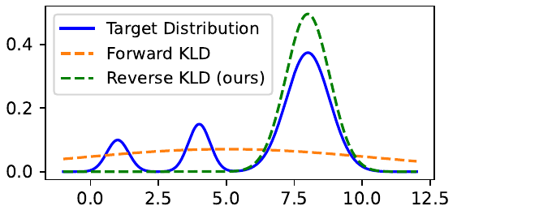
Forward KLD (orange) spreads itself thin trying to cover every mode at once, ending up low and wide — reasonably present everywhere, confidently right nowhere. Reverse KLD (green) picks the single largest mode and matches it closely, ignoring the smaller ones entirely — exactly the mode-seeking behavior from the previous slide, now visible on an actual distribution.
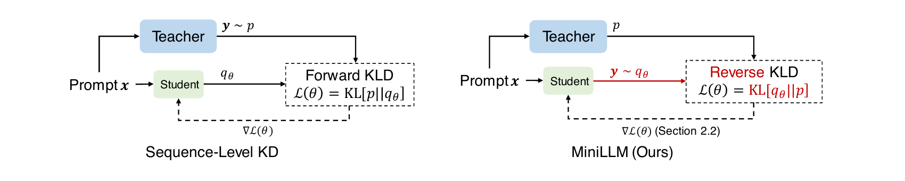
Sequence-level KD samples $y$ from the teacher and trains the student to match those exact samples — forward KLD, forcing memorization of everything the teacher might generate. MiniLLM samples $y$ from the student itself and asks the teacher to grade it — reverse KLD, improving the text the student already tends to produce rather than forcing it to reproduce the teacher's.
$\text{KL}[q_\theta\|p]$ is an expectation over $y\sim q_\theta$ — the distribution being optimized is also the one doing the sampling. Ordinary backprop can't differentiate through a sampling step directly. This is exactly the situation reinforcement learning solves: treat the student as a policy choosing tokens, use the Policy Gradient Theorem to get a usable gradient anyway.
State = the prompt plus tokens generated so far, $(x,y_{<t})$. Action = the next token $y_t$, chosen from the vocabulary. Reward = how much more the teacher likes each generated token than the student already does.
The Policy Gradient Theorem gives an update rule with the shape every policy-gradient method shares: push up the probability of an action in proportion to a reward signal, push it down otherwise. Here, at each generated token $y_t$, the reward is $R_t$ — how much more the teacher likes the rest of this response, from this point on, than the student itself currently expects.
This deck hasn't covered RL for LLMs / RLHF yet, so the full derivation of $R_t$ and the gradient formula is deliberately left qualitative here — worth revisiting in detail once that foundation is in place. The idea to hold onto for now: reward = teacher-relative quality of what follows, and the gradient just does ordinary policy-gradient credit assignment with that reward.
Plain policy gradient on this reward is unstable in practice. The paper identifies three specific failure modes and a fix for each — the mechanics are RL-specific and worth returning to once RL for LLMs is covered properly; the ideas themselves are simple:
Early-token errors compound across a whole sampled sentence. Fix: compute the immediate next-step quality exactly (summed over the vocabulary) instead of estimating it from one noisy rollout.
Sampling purely from the student can find degenerate text (repeated phrases) that the teacher scores well. Fix: sample from a mix of teacher and student, so training rarely wanders into those degenerate regions in the first place.
Summing reward over more remaining tokens mechanically favors short or empty responses. Fix: normalize the reward by how many tokens remain, so it reflects average quality, not raw length.
The overall pipeline mirrors RLHF: an SFT phase followed by a policy-optimization phase — except the reward here comes directly from the teacher's own output distribution, not a separately-trained reward model.
Instruction-following as the task — models learn to produce a response given an instruction, evaluated with Rouge-L against ground truth, human judgment, and GPT-4 feedback.
GPT-2-1.5B → GPT-2 125M/340M/760M
GPT-J 6B / OPT 13B → OPT 1.3B/2.7B/6.7B
LLaMA 13B → LLaMA 7B
Trained on databricks-dolly-15K (~12.5K examples). Evaluated on 5 instruction-following sets: Dolly, SelfInst, Vicuna, S-NI, UnNI.
Baselines: SFT w/o KD (no distillation at all), KD (word-level, forward KLD), SeqKD (sequence-level, trains directly on teacher-generated text).
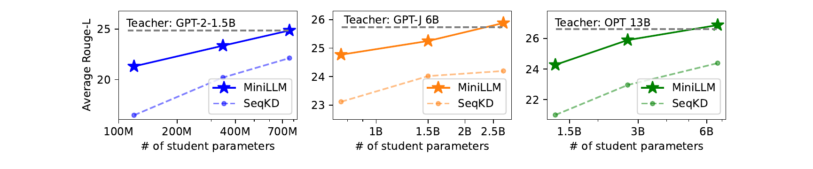
Average Rouge-L vs. student size, three independent teacher/student families. MiniLLM (solid) beats SeqKD (dashed) at every size tested, and the gap holds as student capacity scales from 100M to 6.7B — approaching, and at the largest sizes nearly matching, the teacher's own score (dashed grey line).
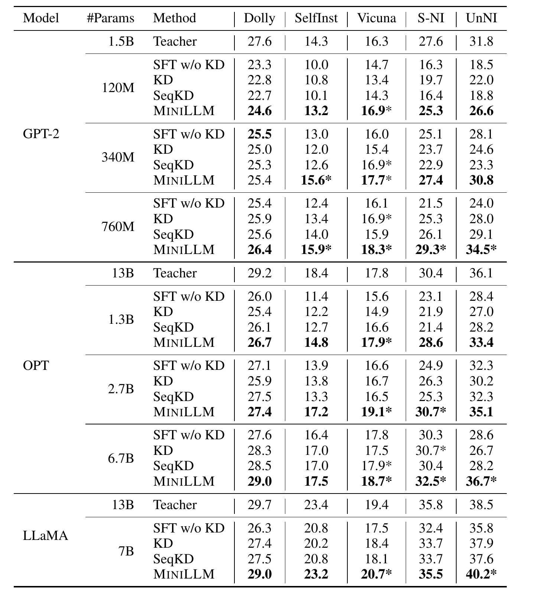
MiniLLM is the best or tied-best student almost everywhere, across every family and every size. On several datasets (Vicuna, S-NI, UnNI) it even exceeds the teacher's own score — attributed to exposure bias: the teacher was fine-tuned with plain teacher-forcing, which itself has a training/inference mismatch that policy-gradient training doesn't share (next slide).
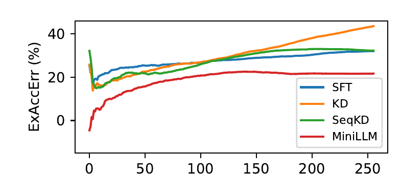
Teacher-forced training only ever sees ground-truth prefixes, never its own mistakes — at free-run inference, small errors compound as generation gets longer (exposure bias). MiniLLM trains on the student's own generated rollouts (reverse KLD samples $y\sim q_\theta$), so it already sees, and corrects for, its own mistakes during training — the excess error (ExAccErr) stops growing past ~150 tokens, while the baselines keep drifting.
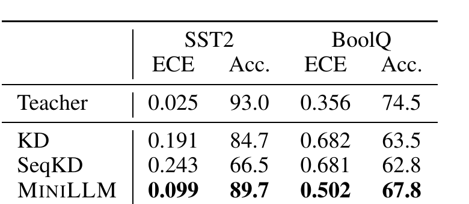
Expected Calibration Error (ECE) — how well a model's confidence matches its actual accuracy — on two zero-shot classification tasks. Forward-KLD baselines (KD, SeqKD) are dramatically worse calibrated than the teacher; MiniLLM narrows that gap substantially, consistent with reverse KLD avoiding the void-region overconfidence forward KLD introduces.
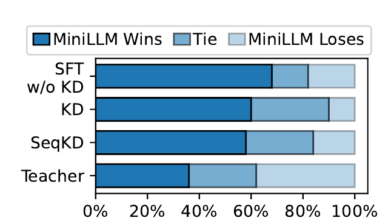
Head-to-head human comparisons, LLaMA-7B student vs. LLaMA-13B teacher. MiniLLM wins outright against every baseline more often than it loses, and even against the teacher itself it's competitive — wins or ties in roughly two-thirds of comparisons.
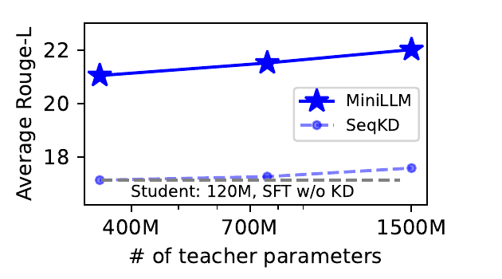
Fix the student (GPT-2-125M) and grow only the teacher. Prior work has found this doesn't always help — a bigger teacher can even hurt naive distillation. MiniLLM instead improves monotonically with teacher size, while SeqKD stays flat — reverse KLD keeps extracting more signal from a stronger teacher instead of just inheriting its blind spots.
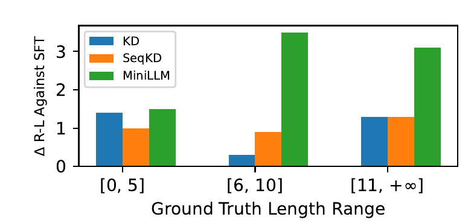
For short expected responses ($\le5$ tokens) the output space is small enough that any method covers it — forward and reverse KLD perform similarly. For longer responses, the teacher's true distribution has far more modes than a small student can represent, and that's exactly where MiniLLM's margin over standard KD widens the most.
Reverse KLD is mode-seeking by design — a natural worry is that it makes generations repetitive. Measured directly with distinct-4-grams (Dist-4, higher = more diverse vocabulary) and language-modeling loss on held-out text:
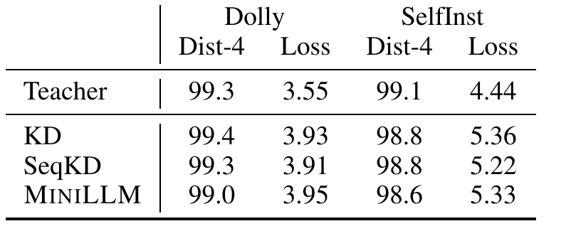
MiniLLM's Dist-4 and loss stay close to the teacher's and the other baselines' — mode-seeking within one response does not collapse diversity across different prompts or different sampling seeds.
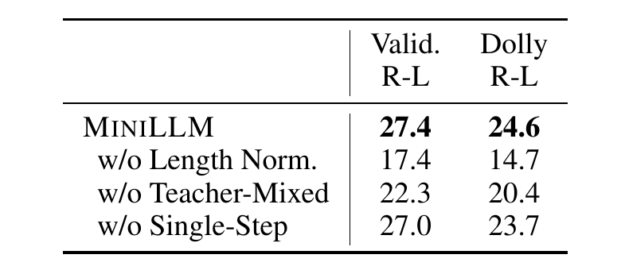
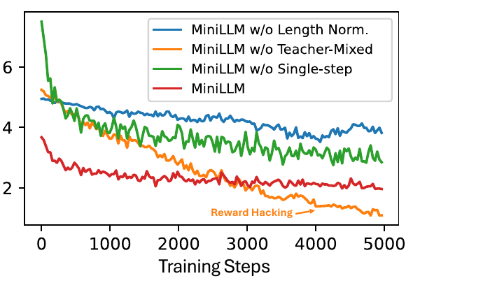
Removing teacher-mixed sampling hurts the most (27.4→17.4 validation Rouge-L) — without it, reverse KLD still goes down during training (right plot, orange), but the model is reward-hacking: learning short, repeated, degenerate strings the teacher happens to score well, not real quality. Single-step decomposition mainly reduces variance (smoother curves, higher final scores) rather than changing the endpoint qualitatively.
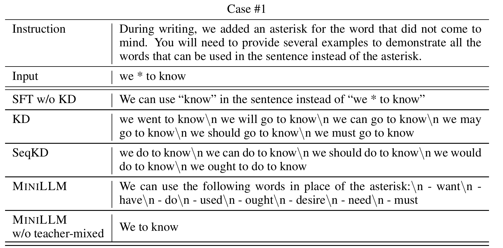
MiniLLM produces the most complete, correctly-formatted answer — a full bulleted list of valid substitutions. Without teacher-mixed sampling, the same architecture degenerates into a near-empty response ("We to know") — a direct, visible instance of the reward hacking the ablation on the previous slide measured numerically.